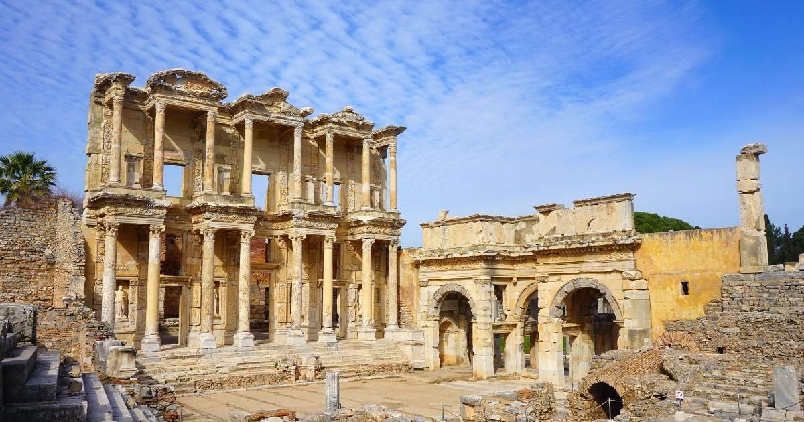

Marea Piramidă din Giza
Marea Piramidă din Giza (numită și piramida lui Keops) este localizată pe Platoul Gizeh - orașul Gizeh, necropola anticului Memphis, actualmente parte a capitalei Cairo.
Aceasta este singura minune a lumii care nu necesită descrieri ale istoricilor din antichitate sau ale poeților. Este singura minune a lumii asupra căreia nu se fac speculații referitoare la formă, mărime și prezentare. Este cea mai veche și totuși singura care a supraviețuit timpului. Contrar părerii generale, numai Marea Piramidă a lui Keops, nu toate cele trei Mari Piramide, se află pe lista celor șapte minuni ale lumii antice.
Marea Piramidă din Gizeh a fost cea mai înaltă construcție din lume mai mult de 43 de secole, până în secolul al XIX-lea în 1889 când a fost construit Turnul Eiffel. Avea, la început, 146 m (azi 138 m) înălțime, latura de 227 m și cuprinde 2.521.000 m cubi de piatră. Fețele piramidei erau placate cu plăci șlefuite din calcar. A fost construită de faraonul Khufu din a IV-a Dinastie, în jurul anului 2560 î.Hr. pentru a servi drept mormânt acestuia.
Tradiția construirii de piramide a început în Egiptul antic ca o sofisticare a ideii de „mastaba” (platformă) ce acoperea mormântul regal. Mai târziu, au fost folosite mai multe „mastaba”, fapt dovedit de primele piramide, cum este Piramida în Trepte a Regelui Zoser (Djoser), construită de faimosul arhitect egiptean, Imhotep.
Potrivit lui Herodot, construcția ei ar fi durat peste douăzeci de ani și la ea ar fi lucrat 100.000 de oameni. Întâi a fost pregătit locul de amplasare și au fost transportate blocurile de piatră. Atunci era folosit un proiect pentru exteriorul piramidei, o șlefuire ce a dispărut de-a lungul timpului. Deși încă nu se știe exact cum au fost așezate blocurile de piatră, au existat mai multe teorii: una din aceste teorii se referă la construirea unei rampe drepte sau în spirală, ce era înălțată pe măsură ce se ridica piramida. Această rampă, îmbrăcată cu noroi și apă, ușura transportarea blocurilor împinse (sau trase) la locul lor. O altă teorie sugerează că blocurile de piatră erau puse la locul lor folosind pârghii lungi.
Când au cucerit Egiptul, în anul 641 e.n., arabii au găsit piramida intactă și după ce au deschis-o, căutând comoara lui Keops, sarcofagul era gol.
De-a lungul istoriei, piramidele de la Gizeh au stimulat imaginația oamenilor, aceștia numindu-le "Grânarele lui Iosef" sau "Munții Faraonului". Când Napoleon a invadat Egiptul în 1798 mândria resimțită de el atunci a fost exprimată în faimosul citat: Soldats! Du haut de ces Pyramides, 40 siècles nous contemplent („Soldați! 40 de secole ne privesc din vârful piramidei”).
În ultimii ani s-au mai descoperit încă trei sau patru camere, în apropiere de camera funerară, într-una fiind corabia regală, iar celelalte sunt în curs de explorare, dezvăluind poate ultimele secrete ale Marii Piramide: tezaurul și mumia faraonului.
Astăzi, Marea Piramidă este inclusă, împreună cu celelalte piramide și cu Sfinxul, în regiunea turistică a Platoului Gizeh. De asemenea, în zona aceasta se află muzeul ce găzduiește misterioasa Barcă Solară, descoperită abia în 1954, lângă partea de sud a piramidei. Această barcă se presupune că a purtat corpul lui Khufu în ultima sa călătorie, înainte de a fi înmormântat în piramidă. Se poate de asemenea să fi servit și ca mijloc de transport în viața de apoi, conform credințelor antice egiptene.
Descrierea piramidei
Atunci când a fost construită, Marea Piramidă avea 145,75 m înălțime. De-a lungul timpului, a mai pierdut 9 m din vârf. Era acoperită cu piatră șlefuită (o parte se mai vede în vârful piramidei lui Khefren). Unghiul sub care e construită este de 54 de grade și 54 de minute. Fiecare parte a ei este orientată atent spre unul din punctele cardinale locale, adică nord, sud, est și vest. Perimetrul orizontal al fiecărei secțiuni în piramidă descrie un pătrat. Cea mai mare eroare între lungimile laterale este, uimitor, mai mică de 0,1%.
Fiecare bloc de piatră din cele două milioane în total cântărește mai mult de 2 tone. S-a sugerat faptul că în cele trei piramide sunt suficiente blocuri de piatră pentru a construi un zid gros de 30 cm și înalt de 3 m care să înconjoare Franța. Suprafața ocupată de Marea Piramidă poate înghiți Bazilica Papală Sf. Petru din Roma, catedralele din Florența și Milano, Abația Westminster și Catedrala Sf. Paul din Londra, toate laolaltă.
Pe fațeta din nord se află intrarea în piramidă. Coridoarele și galeriile duc fie spre camera mortuară a regelui, fie au avut alte funcții. Camera regelui se află în inima piramidei, putând fi accesată numai prin Marea Galerie și un coridor ascensional. Sarcofagul regelui este făcut din granit roșu, ca și pereții interiori ai camerei. Cea mai impresionantă este piatra cu laturi foarte fin șlefuite de deasupra intrării, lungă de peste 3 m, înaltă de 2,4 m și groasă de 1,3 m. Toate pietrele din interior se potrivesc așa de bine, încât nu poți strecura nici un card între ele. Sarcofagul este orientat conform direcțiilor cardinale și este cu numai 1 cm mai mic decât intrarea în cameră. Probabil a fost introdus în timpul construcției.
Au fost propuse noi teorii referitoare la originea și scopul piramidelor de la Giza... Observații astronomice... Locuri de venerare.. Structuri geometrice construite de o civilizație demult dispărută... Chiar și teorii legate de extratereștri au fost propuse, fără dovezi clare... Dar dovezile istorice și științifice copleșitoare sprijină în continuare concluzia că Marea Piramidă, ca și alte mici piramide din regiune, a fost construită de civilizația egipteană de pe malul vestic al Nilului, pentru a servi ca morminte regilor lor. Morminte unde Khufu, Khefren și Menkaure puteau să-și înceapă călătoria mistică în viața de apoi.
Herodot a spus că piramida a fost construită în 20 de ani, adică 7300 zile, (Khufu a domnit circa 23 ani) astfel, toate cele 2521000 blocuri de piatră de peste 2 tone fiecare au fost urcate pe piramidă în acest timp. Asta înseamnă că, dacă s-a lucrat tot anul în fiecare zi pe întreaga durată de 20 ani, atunci, în medie au fost adăugate 345,4 blocuri de piatră pe zi. Dacă s-a lucrat 8 ore pe zi, atunci s-au adăugat 43,2 blocuri de piatră pe oră, adică aproape 1 piatră de peste 2 tone pe minut. Dacă s-a lucrat 24 ore pe zi, ceea ce e mai puțin probabil, atunci s-au adăugat în medie 14,4 pietre pe oră. Pietrele însă au trebuit tăiate în forma pe care o au, și aduse la fața locului, unele de la câteva sute de kilometri distanță. În încăperea regelui au fost folosite mai multe pietre de până la 80 tone fiecare, și probabil nu a fost ușor pentru egipteni să le ridice până în inima piramidei la 50 metri peste sol. Majoritatea pietrelor au însă în jur de 2500 kilograme, așa că dacă s-au înghesuit 20 de persoane în jurul pietrei care are în medie 127 cm x 127 cm x 71 cm , și fiecare a ridicat 125 kilograme, atunci cele 20 persoane cărând 125 kilograme fiecare au trebuit să urce treptele de 71 cm înălțime pentru a urca piatra pe piramidă. Deși în Egipt sunt peste 60 piramide, doar cele 3 piramide de la Gizeh sunt construite cu pietre așa mari.
Deși aparent piramida are patru laturi, de fapt ea are opt laturi. O fotografie făcută din întâmplare de generalul de brigadă Groves și publicată pentru prima oară în 1929 arată o „latură” a piramidei împărțită în două, așa cum apare ea în bătaia soarelui. Prin urmare, Marea Piramidă are opt laturi și nu patru, dar acest efect de împărțire nu este vizibil cu ochiul liber.
Grădinile suspendate ale Semiramidei
Grădinile suspendate ale Semiramidei sau Grădinile suspendate din Babilon, au fost construite de regele Nabucodonosor al II-lea (605-562 î.Hr.) pentru una din soțiile sale, Amytis (Amuhea). Ele figurau în antichitate printre cele Șapte minuni ale lumii antice. După o veche legendă, răspândită în special de scriitorii greci, ar avea o origine mult anterioară: ele ar fi fost construite de regele Ninus întemeietorul orașelor Ninive și Babilon, pentru soția sa Semiramida (Semiramis). După informațiile istoricului Diodor din Sicilia, uriașele grădini ocupau o suprafață de 15000 m² și se ridicau în patru terase până la 77 metri înălțime. Pe terase erau plantați arbori din mai multe specii, unii dintre ei fiind înalți de 24 metri. Erau udați de pompe cilindrice, al căror secret nu se cunoaște încă. Sub terase, sprijinite pe mai multe coloane, se găseau camere răcoroase pentru familia regală. După unele relatări, se pare că vestitele grădini au fost dărâmate de perși, în timpul ocupării Babilonului, tot atunci fiind dărâmat și Turnul Babel.
Cadrul geografic și evoluția istorică
Construcția grădinilor suspendate din Babilon trebuie apreciată prin prisma încadrării lor în mediul înconjurător: clima caldă și uscată, peisajul arid și obiceiurile vechilor locuitori ai Mesopotamiei. La popoarele orientale din antichitate, noțiunea de grădină era legată de ideea supremei fericiri omenești. Această mentalitate a făcut pe vechii perși să numească grădinile lor "raiuri".
Așezat pe fluviul Eufrat, vechiul Babilon își pierde originea în negura vremurilor. După vechi legende, el ar fi fost întemeiat fie de către legendarul Nimrod, fie de către zeul Baal, fie de regele Ninus, soțul miticei regine Semiramida. După o perioadă zbuciumată, marcată de rivalitățile și războaiele cu asirienii, Babilonul reușește pe la sfârșitul secolului al VII-lea î.Hr. să-și consolideze hegemonia. Conducător al statului a fost ales Nabopalassar (626-605 î.Ch.), fondator al dinastiei caldeene. Fiul și urmașul acestuia, Nabucodonosor al II-lea (605-562 î.Hr.), reface orașul, întărind fortificațiile și construind palate, ele înseși fortificate. Ținând seama de structura religiei babiloniene, rolul predominant îl aveau preoții, conferind statului un regim teocratic.
Grădinile suspendate în scrierile vechilor autori
Descrierea Babilonului de către Herodot corespunde, cu unele rectificări, cu rezultatul săpăturilor arheologice. Orașul avea mai multe ziduri de incintă, dispuse concentric. Orașul propriu-zis era cuprins în interiorul primei incinte, care avea latura de aprox. 1700 metri, și avea două cartiere, unul care cuprindea palatul regal, iar celălalt templul zeului Enlil (sau Bel, după denumirea semită), ambele pe malul stâng al Eufratului.
În colțul de nord-est al palatului, lângă poarta zeiței Iștar, se aflau grădinile suspendate. După cum spune Diodor din Sicilia - repetând probabil cele spuse de Ctesias, a cărui operă s-a pierdut - grădinile au fost construite de Nabucodonosor pentru una din soțiile sale, Amytis, fiica regelui Cyaxares al Mezilor, care regreta peisajul muntos, cu vegetație bogată al ținutului natal. Atribuirea grădinilor reginei Semiramida este cu mare probabilitate de domeniul legendei. Calificativul "suspendat", care însoțește numele acestor grădini, se datoreaza relatărilor în limbile greacă sau latină. În limba greacă cuvântul "kremastos" (κρεμαστος) și în latină cuvântul "pensilis" are o dublă semnificație: un obiect sau o construcție care atârnă ("suspendat"), sau o construcție susținută de coloane și arcade, o terasă, în general un obiect susținut la o anumită înălțime.
Cea mai completă descriere a grădinilor se datorează lui Diodor din Sicilia, care arată că ele se compuneau din terase etajate în amfiteatru, cu o latură de aprox. 123 m. Terasele erau susținute de ziduri de piatră, construite la o distanță de trei metri unele de altele. Spațiile dintre ziduri erau acoperite cu bolți realizate din blocuri de piatră. Pe aceste blocuri era așezat un strat de trestie îmbibat în asfalt, deasupra trestiei urma un dublu rând de cărămizi arse, legate între ele cu mortar de ipsos, acoperite cu foi de plumb, pentru a desăvârși izolarea hidrofugă. Peste foile de plumb era un strat de pământ, de grosime suficientă pentru ca să poată prinde rădăcinile celor mai mari arbori. Diodor spune: "...Terasele erau pline de plante de toate felurile, în stare să încânte vederea prin mărimea și frumusețea lor".
În grosimea teraselor erau amenajate galerii și camere, care primeau lumina lateral, pe o singură latură, în așa fel încât galeriile și camerele de la un anumit nivel aveau în față priveliștea unei grădini, care se rezema pe terasele nivelului inferior.
Pentru stropitul grădinilor se foloseau mașini hidraulice, care urcau apa din Eufrat la diferitele niveluri. Pe sub rădăcinile plantelor erau o serie de canale, care umezeau neîncetat pământul. Datorită posibilităților întreținerii unei continue umidități, pe terase au putut să crească nu numai bogate partere de flori, dar și pomi fructiferi, anumite specii de tamarix, palmieri etc.
Cercetări arheologice
Primele cercetări arheologice moderne au fost întreprinse de o misiune franceză condusă de Fulgence Fresnel în anii 1852 - 1855, explorarea completă a fost făcută de o misiune germană condusă de Robert Koldewey în anii 1899 - 1914. Săpăturile efectuate în colina El Kasr (în arabă: "castelul" sau "citadela") au descoperit ruinele marelui palat al lui Nabucodonosor, poarta principală a orașului și templul zeiței Nin-Mach. În partea de nord-est a palatului s-au pus în evidență fundațiile construcției care susținea probabil Grădinile suspendate. S-a descoperit și un coridor central, care are pe ambele laturi câte șapte camere, corespunzând în general cu descrierile lui Diodor. În afară de poziția ruinelor, de modul de construcție și de dimensiunile lor, care corespund cu ceea ce se cunoaște din descrierile autorilor antici, mai există o probă foarte convingătoare că într-adevăr acestea sunt ruinele fostelor Grădini suspendate: Robert Koldewey a găsit trei puțuri situate alăturat, în serie, unul central cu secțiune pătrată, între celelalte două cu secțiune ovală, care sugerează existența unei mașini hidraulice, care funcționa probabil pe același principiu ca un aparat cu găleți cu lanțuri. Acest dispozitiv putea da un flux continuu de apă.
Pe terenul vechiului Babilon este astăzi un deșert, aproape total lipsit de vegetație. Terasele grădinilor au dispărut de multă vreme, în locul splendorii de altădată, deșertul dă o impresie de tristețe. În vârful unei coline mai există un arbore secular, un atleth, considerat de unii nostalgici ca fiind o ultimă rămășiță a faimoaselor grădini.
O nouă ipoteză
Dr Stephanie Dalley, de la Universitatea Oxford, a emis o nouă ipoteză cu privire la locul unde s-ar fi aflat grădinile suspendate. Pe baza reinterpretării vechilor inscripții asiriene, ea presupune că grădinile suspendate ar fi fost ridicate de regele Senaherib în localitatea Ninive din Asiria, în apropiere de actuala localitate Mosul din Irak.
Templul lui Artemis din Efes
Templul Artemisei din Efes (în greacă: Artemision, lat. Artemisium), cunoscut și ca „Templul Dianei”, a fost un edificiu antic grec construit pentru zeița Artemis. Templul a fost ridicat în anul 550 î.Hr. în Efes, oraș aflat atunci pe teritoriul imperiului babilonian. Templul zeiței Artemis din Efes se află la 50 km la sud de orașul Izmir, Turcia. Din templul original, considerat una din cele șapte minuni ale lumii nu au rămas decât puține relicve.
Templul a fost construit timp de 120 ani, după planurile concepute de către Chersiphron și fiul său, Metagenes. Clădirea a fost construită de 51m lățime și de 105 m lungime. 127 de coloane de 18 m înălțime susțineau acoperișul. În interiorul templului se afla statuia de 2 m a zeiței Artemis, acoperită cu aur și argint.
Philon din Alexandria|Philon a spus despre clădire: "Am văzut zidurile din Babilon, am văzut grădinile din Semiramis, am văzut statuia lui Zeus din Olimp, Colosul din Rodos, piramidele. Dar când am văzut templul din Efes, celelalte minuni au dispărut ca în ceață."
La 21 iulie 356 î.Hr., templul a ars într-un incendiu; se spune că un om numit Herostratus a aprins focul și că și el a murit în foc. Istoria acestui om este una din cea mai dramatică și plină învățăminte din antichitate. El nu se deosebea prin nimic de semenii săi, însă, în dorința ca numele său să fie păstrat în conștiința oamenilor și în istorie a comis acest act criminal. De aici a luat naștere expresia „Slavă lui Herostrat”. Legenda spune că în noaptea în care templul a ars, s-a născut Alexandru cel Mare, iar Artemis a fost prea ocupată cu nașterea lui și nu a avut grijă de templu.
Alexandru a oferit oamenilor din Efes bani pentru a reconstrui templul, dar aceștia nu au acceptat. Construcția noului templu a început în anul 323 î.Hr, din banii efesenilor și a continuat timp de mai mulți ani. Acest templu era mult mai mare decât precedentul: 69 m lățime, 137 m lungime, dar numărul de coloane și înălțimea lor a rămas aceiași. Cultul zeiței Artemis era unul extrem de viu de aceea orașul a beneficiat de fonduri pentru a construit un mare templu.
În scrierile sale, istoricul Pausanias menționa faptul că în templul de la Efes exista o mare statuie a zeiței Artemis, dar existau și altele precum o veche statuie a zeiței Nyx realizată de către sculptorul Rhoecus în secolul al VI î.Hr. De asemenea sunt descrise coloanele acoperite cu aur și argint dar și picturile ce le reprezentau pe Amazoana, considerate a fii fondatoarele Efesului.
Templul este menționat și în scrierile creștinismului timpuriu, inclusiv în Noul Testament. Conform Faptelor Apostolilor, apariția primilor misionari creștini în Efes a cauzat o mare tulburare și revoltă în rândul cetățenilor.
În anul 162 d.Hr, în vremea împăratului roman Marc Aureliu, a fost dat un edict în urma căruia se recunoștea importanța festivalului religios anual dedicat lui Artemis de la Efes și se lungea perioada sa de la câteva zile la o lună. Zeița Artemis din Efes, în calitate de Mare Zeiță a fost în cele din urmă identificată cu Cybele. În anul 268, templul a fost avariat în urma raidurilor goților când aceștia au atacat Efesul și au incendiat mare parte din el. Istoria ulterioară a templului este destul de neclară, este posibil să fi fost renovat, dar a intrat în declin după incendiul din 268 care l-a distrus în mare parte și după indiferența împăraților și a cetățenilor cauzată de declinul cultelor Păgânism și de creștinarea imperiului. Se știe că multe dintre coloanele vechiului templu au fost transportate la Constantinopol pentru construirea catedralei Hagia Sofia sau Sfintei Sofia.
După săpăturile arheologice din secolul al XIX-lea, respectiv secolul XX, multe dintre comorile vechiului templu printre care statui, vase și basoreliefuri au fost transportate la British Museum din Londra și la Muzeul de Arheologie din Efes. În prezent vechiul site al templului atrage în continuare mii de vizitatori anual datorită importanței sale majore.
Statuia lui Zeus din Olympia
Statuia lui Zeus este una dintre cele șapte minuni ale lumii antice, sculptată după tehnica criselefantină, în fildeș ornată cu aur și având o structură internă din lemn. Statuia, cu o înălțime estimată la aproximativ 13 m, a fost realizată de către sculptorul Phidias în preajma anului 435 î.Hr. în orașul Olympia din Grecia. Pentru adăpostirea statuii a fost construit un templu.
Se crede că în anul 394 d.Hr. statuia a fost transportată la Constantinopol, unde avea să fie distrusă de un incendiu în anul 475.
În 1958 a fost descoperit la Olympia și atelierul lui Phidias unde s-a lucrat la realizarea statuii și au putut fi identificate câteva din tehnicile de lucru (ulterior atelierul a fost transformat într-o bazilică creștină, în prezent ruinată).
Cadru istoric și geografic
Olympia
Localitatea Olympia era situată în partea de vest a Peloponezului, la aproximativ 10 km de țărmul mării Ionice, la confluența fluviului Alfeu cu râul Cladeos. Așezată pe partea dreaptă a fluviului, la poalele muntelui Cronion, într-un peisaj mereu verde, Olympia nu a fost niciodată un oraș propriu-zis, ci un vast sanctuar, unde temple, altare și clădiri publice, consacrate diferitelor zeități, se aflau reunite sub conducerea spirituală atribuită lui Zeus.
La origine, Olympia era un centru pur religios, de importanță locală, apoi faima sa a crescut prin Jocurile Olimpice, la care s-a adăugat importanța politică a sanctuarului; a devenit cu timpul un centru diplomatic, în care se hotăra uneori soarta statelor grecești.
Conform legendelor, ținutul Olympia fusese cucerit de dorieni, conduși de către eroul Heracles (Hercule). Ei au trasat limitele incintei sacre numită "Altis", denumire provenită din cuvântul altis, care înseamnă crâng sau dumbravă. În urma săpăturilor arheologice, s-a dovedit că incinta avea o formă trapezoidală, cu dimensiuni de aproximativ 200 m lungime și 175 m lățime. Pe această platformă, amenajată în terase, s-au construit în decursul timpurilor multe edificii sacre. În secolul al V-lea î.Hr. s-a construit marele templu al lui Zeus, Theokoleonul (locuințele preoților) și Prytaneion(en)ul (unde era adăpostit focul sacru).
Templul lui Zeus din Olympia
După victoria decisivă a grecilor, conduși de Temistocle, asupra perșilor, în bătălia navală de la Salamina (480 î.Hr.), s-a hotărât să fie construit la Olympia un templu consacrat lui Zeus, care să fie cel mai mare și mai bogat din Altis. El a fost construit de arhitectul Libon originar din Elida (Peloponez) și a fost terminat în anul 457 î.Hr. Templul a fost realizat în ordinul "doric peripter hexastil", cu șase coloane în fațada principală și câte treisprezece coloane pe fațadele laterale, cu dimensiuni de 67,12 m lungime, 27,68 m lățime și 20,25 m înălțime totală, până la partea superioară a frontonului (conform descrierii istoricului Pausanias). Templul era acoperit cu plăci de marmură de Naxos, iar frontonul de est, în loc de acrotera (mic piedestal servind ca suport statuilor, vaselor și altor ornamente), purta o Victorie aurită. Decorația sculpturală a celor două frontoane, executate se pare de Paeonios și Alcamenes, a făcut faima acestui templu. Interiorul era împărțit în trei zone: de la intrare până la a doua coloană era un spațiu liber, urma un spațiu închis până la cincea coloană, cu o balustradă de marmură; de la a cincea coloană până la peretele de vest, era așezată statuia lui Zeus pe un soclu din marmură albastră de Eleusis.
Statuia lui Zeus - Descriere
Din măreața statuie ridicată lui Zeus la Olympia nu a rămas decât soclul. Aspectul ei ar fi rămas necunoscut, dacă Pausanias nu ne-ar fi lăsat bogata și amănunțita sa descriere.
Autorul acestei opere, Phidias, era atenian, prieten și sfătuitor al lui Pericle. Era deja cunoscut, după ce realizase cu puțin timp înainte statuia reprezentând pe Athena Parthenos din templul Parthenon de pe colina Acropolis din Atena. În mod asemănător, statuia lui Zeus a fost executată în tehnica chryselephantină, din lemn îmbrăcat în foi de aur și cu plăci de fildeș.
După cum spune Pausanias, sculptorul a lucrat la opera sa într-o clădire care se afla la vest de Altis și care era cunoscută și șase secole mai târziu sub numele de "atelierul lui Phidias". El a avut drept colaboratori, un pictor - fratele său, Panaenos - și un gravor, Colotes, originar din insula Paros. După ce statuia a fost complet gata în atelier, ea a fost demontată și transportată piesă cu piesă în templu, unde a fost remontată pe soclul de marmoră dinainte pregătit.
Statuia avea înălțimea de aprox. 13 m, iar soclul nu depășea 14 m, înfățișându-l pe Zeus așezat pe un tron cu un spătar înalt, bogat decorat. În mâna dreaptă ținea o Victorie, lucrată în fildeș și aur, capul era încununat cu ramuri de măslin. În mâna stângă, Zeus ținea un sceptru pe care stătea un vultur de aur. O mantie îi cădea de pe umeri peste torsul gol și-i acoperea picioarele. Părțile corpului neacoperite erau de fildeș, picioarele erau rezemate pe un taburet, susținut în cele patru colțuri de sfincși de aur.
Tronul era bogat decorat, policrom, cu abanos, bronz, fildeș, aur, pietre prețioase și picturi. Pausanias descrie în amănunt toate picturile care împodobeau tronul și care reprezentau lupte legendare, figuri de zei și chiar scene din jocurile olimpice. Astfel, sub sfincșii care susțineau brațele tronului erau basoreliefuri care-i înfățișau pe Apollo și pe Artemis omorând copiii Niobei, pe traverse erau reprezentate lupte ale lui Heracles și ale lui Tezeu cu amazoanele, pe soclu, Afrodita ieșea din spuma mării.
Expresia feței lui Zeus imprima privitorului o profundă emoție. Forța și în același timp seninătatea au impresionat pe toți cei care au privit statuia și a căror părere s-a păstrat ca mărturie scrisă.
În fața statuii exista un bazin care conținea uleiul necesar întreținerii, având în același timp și rolul unei enorme oglinzi în care se reflecta statuia.
Publicul nu se putea apropia de statuie, nici nu o putea vedea în fiecare zi. Antioh al IV-lea Epifanul (175 - 164 î.Ch.), regele Siriei elenistice, a oferit templului o draperie de purpură, care a fost montată în fața statuii și nu era îndepărtată decât la solemnități.
Lumina care pătrundea în templu și cea dată de flacăra parfumurilor care ardeau pe trepiede de bronz, era suficientă pentru a îmbrățișa toată măreția statuii. Umbre și lumini jucau pe sandalele de aur, prin cutele mantiei bogat drapate, pe torsul palid de fildeș, pierzându-se pe fața calmă și fruntea senină, în ochii care concentrau toată viața statuii.
Cercetări arheologice
Nu se cunosc cu siguranță împrejurările în care a dispărut opera lui Phidias. La aproape 60 de ani după terminarea lucrării, plăcile de fildeș au început să se desprindă, fiind nevoie de o restaurare. Se presupune că statuia ar fi fost distrusă o dată cu incendierea templului în anul 408 d.Hr. După unii cercetători, ea ar fi fost dusă la Constantinopol din ordinul împăratului Teodosiu al II-lea, unde ar fi fost distrusă de un incendiu în anul 475.
Deși templul a fost distrus aproape în întregime, au rămas totuși fundațiile, o parte din pardoseală și unele fragmente din coloane, din antablament și din frontoane, ceea ce a ajutat mult la reconstituirea lui.
Lucrările arheologice au început la Olympia la începutul secolului al XIX-lea, descoperind - printre altele - în 1829 amplasamentul templului. În perioada 1875-1881, o misiune arheologică germană sub conducerea istoricului Ernest Curtius, a descoperit un mare număr de edificii și ansambluri, precum și un număr impresionant de obiecte, monede, inscripții, obiecte de ceramică. Cu această ocazie, s-au descoperit și numeroase fragmente ale templului lui Zeus precum și soclul statuii.
În afară de descrierile amănunțite ale lui Pausanias, mai există un document destul de important, care permite cercetătorului modern să-și facă o idee generală asupra înfățișării statuii: o monedă de bronz din Elida, din timpul împăratului roman Hadrian (117-138). Un aspect general al statuii lui Zeus este redat și într-o pictură murală din epoca romană, descoperită în 1888 la Eleusis.
Mausoleul din Halicarnas
Mausoleul din Halicarnas(azi Bodrum, Turcia) a fost opera arhitecților Pytheos și Satyros și a sculptorilor Scopas și Timotheos. Mausoleul poartă numele guvernatorului local Mausol, care a fost guvernatorul (satrapul sau regele) provinciei elenistice Caria (377-353 î.Hr.) pentru care fusese destinat, ca mormânt-templu.Acest monument arhitectural a fost considerat una dintre cele șapte minuni ale lumii antice.
Regiunea, importantă din punct de vedere strategic pentru navigația din Mediterana orientală, era adeseori teatrul unor conflicte militare. În anul 556 î.Hr., regele Persiei Cyrus al II-lea a cucerit această zonă, care îi oferea acces direct la mare. Imperiul său se întindea la est până la fluviul Indus, la nord până la țărmurile Mării Negre și la sud până la Oceanul Indian. Imperiul nu putea sa aibă un guvern centralizat, din cauza situației mijloacelor de transport și de comunicare din acea vreme. Regii perși puneau în locul lor un guvernator regional, numit satrap. Începând din anul 377 î.Hr., satrapul Mausol guverna Caria, regiunea de coastă, din sud-vestul Asiei Mici. Tatăl sau, satrapul Hekatominos, contribuise la înflorirea economică a portului Halicarnas. Mausol a continuat extinderea acestei capitale de provincie. De asemenea, s-a îngrijit să lase moștenire orașului un monument nepieritor, în amintirea tatălui său și a sa, pe locurile unde ei au funcționat ca guvernatori. Prieten al culturii elene, el i-a chemat pe arhitecții Satyros și Phytheos și pe sculptorii Scopas și Timotheos, toți din Grecia.
Ei s-au deosebit de ceilalți concurenți prin proiectul lor, pe cât de neobișnuit, pe atât de impunător: nu au conceput un monument scund, tradițional in Grecia, ci o construcție foarte înaltă. Mausol nu a putut însă să vadă terminat mausoleul său. El a murit în anul 353 î.Hr. Văduva sa, Artemisa, care îi era și soră, a continuat lucrările începute, nu fără intenția de a ridica un monument și pentru ea însăși. De aceea, pe cvadriga ce urma să încoroneze monumentul s-au construit statuile cuplului princiar, Mausol și Artemisa. Artemisa nu a trăit destul de mult pentru a vedea opera terminată. A murit la doi ani după soțul și fratele ei. Arhitecții au continuat construcția până la sfârșit (335 î.Hr.), realizând un monument și pentru propria lor glorie, considerat mai târziu ca una din minunile lumii antice. Pe un soclu înalt, cu cinci trepte, cu dimensiunile de 39 m lungime și 33 m lățime, se găsea un suport lung de 33 m, lat de 27 m și înalt de 22 m. Pe acesta se înălța templul funerar propriu-zis, susținut de 39 de coloane, având 39 m fiecare (singura parte ce amintea arhitectura greaca tradițională). Imediat deasupra acoperișului se mai inălța o piramidă cu 24 de trepte, pe al cărei vârf trunchiat era așezată cvadriga. Cu o înălțime totală de 49 m, mausoleul ar fi putut echivala în zilele noastre cu o clădire cu 16 etaje. Mâna omului nu a distrus cel mai celebru monument funerar al antichității, al carui nume a devenit generic pentru toate marile morminte construite mai târziu. Marii cuceritori, cum ar fi Alexandru cel Mare, care a cucerit orașul Halicarnas în anul 334 î.Hr., au cruțat monumentul și l-au tratat cu respect. De-abia în secolul al XII-lea d.Hr., un puternic cutremur a distrus monumentul, rezervându-i o soartă tristă, cea de carieră pentru construirea castelului fortificat Sf. Petru al Cruciaților Ioaniți (în sec. XVI).

Resturile Mausoleului din Halicarnas, aflate în partea de nord a orașului Bodrum (la cca 1 km de centru) sunt cuprinse într-un muzeu în aer liber, fiind accesibile publicului.
Colosul din Rodos
Colosul din Rhodos a fost o statuie imensă construită în antichitate pe insula Rhodos din Grecia, una din cele șapte minuni ale lumii antice. Statuia îl înfățișa pe zeul grec al Soarelui, Helios, și măsura între 32 și 36 de m. Construcția s-ar fi realizat în 12 ani și ar fi fost finalizată în anul 282 î.Hr. După unii, străjuia intrarea în portul din insulă. Conform cercetărilor mai noi, s-ar fi aflat aproximativ pe locul unde în prezent este intrarea în Castelul Templierilor.

Rhodos devine în anul 408 î.Hr. capitala mai multor teritorii unite și un important port comercial. Se bazează pe un aliat (Ptolemeu I al Egiptului). Macedonenii încearcă să rupă acestă alianță, însă locuitorii din Rhodos sunt uniți și rezistă asediului. Colosul din Rhodos a fost construit în cinstea zeului soarelui, Helios, ca mulțumire pentru protecția locuitorilor în timpul asediului. Chares din Lindos, un sculptor de pe această insulă, a fost angajat pentru construcția statuii. Statuia ar fi străjuit intrarea în port timp de 56 de ani. Când soarele răsărea dimineața, se reflecta în suprafața de bronz și făcea ca figura zeului să strălucească. În 225 î.Hr., în urma unui cutremur, i s-a rupt un picior. După prăbușirea statuii, locuitorii din Rhodos au vrut să o reconstruiască, primind chiar o ofertă de la Ptolemeu al III-lea, însă un oracol le-a interzis. După ce arabii au cucerit insula în anul 653, statuia a fost vândută de către aceștia unui evreu din Siria, care a cărat-o pe 900 de cămile, după cum spune legenda.
Statuia era construită din bronz și întărită ulterior cu fier și piatră. Se spune că au fost folosite 15 tone de bronz și 9 tone de fier, însă calculele arată că aceste cantități au fost chiar mai mari. Avea o înălțime de 33 m și stătea pe un soclu înalt de 15 m. Teoria că acest colos stătea cu câte un picior pe fiecare mal al portului este doar o legendă, pentru că în nici o scriere nu se specifică acest lucru. Se crede că ea a inspirat sculptorul francez Auguste Bartholdi care a construit Statuia Libertății din New York.
Astăzi, cele mai înalte statui din lume includ Buddha din Templul de primăvară al Chinei, care are o înălțime de 107 de metri, și Birmania Laykyun Setkyar Buddha, care are 116 metri înălțime. Ambele structuri au fost finalizate la începutul secolului 21.
Farul din Alexandria
Având o înălțime de 124 m, cât un zgârie-nori din zilele noastre și rămânând cel mai înalt far construit vreodată, Farul din Alexandria, ultima dintre Cele Șapte Minuni ale lumii antice a străjuit mai bine de o mie de ani unul dintre cele mai importante porturi din Mediterana, dând curs unor numeroase legende.
Încă din cele mai vechi timpuri oamenii au fost capabili să construiască adevărate megastructuri fie pentru a arăta măreția conducătorilor și a civilizației căreia îi aparțineau, fie pentru că necesitatea cerea aceste construcții. Cu toate că dintre Cele Șapte Minuni ale lumii antice astăzi nu se mai păstrează decât Marea Piramidă de la Gizeh, au rămas totuși mărturii scrise și ruine și ale celorlalte, însă absența lor punându-le într-o umbră de mister.
Farul din Alexandria face parte din lista marilor minuni antice, fiind ultima dintre acestea, dar și cea mai utilă. Dăinuind aproape 1 700 de ani, a jucat un rol esențial în ghidarea corăbiilor către orașul-port Alexandria, rămânând încă cel mai înalt far construit vreodată.
Cea mai utilă minune a lumii antice
Construcția acestuia a fost strâns legată de domnia lui Alexandru cel Mare care a fondat orașul Alexandria în anul 332 î. Hr. Așezarea fusese inițial un simplu oraș de pescari și înspre care accesul corăbiilor se realiza anevoios din cauza numeroaselor stânci submarine care produceau permanent naufragii. Pe măsură ce importanța orașului a crescut iar comerțul pe mare s-a intensificat, necesitatea construirii unui avanpost care să coordoneze ambarcațiunile a fost tot mai mare. Astfel, abia începând cu anul 299 î. Hr. în timpul domniei succesorului lui Alexandru cel Mare, Ptolemeu Soter (305-282 î. Hr.) s-a pornit construirea Farului pe o insulă din apropierea portului, numită Pharos. De asemenea, se estimează că lucrările ar fi durat în jur de 20 de ani.
Farul din Alexandria se ridica până la o înălțime de 124 m deasupra nivelului mării, ca un adevărat zgărie-nori din zilele noastre, dar deși a reprezentat un model de construcție pentru farurile de mai târziu, nici până în prezent nu a mai fost clădit unul de o asemenea mărime.
Străjerul din Marea Mediterană
Se spune că fusese amplasată pe edificiu următoarea inscripție:„Sostrates, fiul lui Dexiphanes din Cnidos, a închinat această construcție zeilor salvatori în numele celor care cutreieră mările.” Bineînțeles că o asemenea clădire a reprezentat subiectul a numeroase legende scornite de cei care rămâneau impresionați de imensitatea Farului. Una dintre aceste legende relata faptul că oglinda din vârf putea capta lumina soarelui și să o îndrepte spre corăbiile inamice pentru a lua foc.
În ceea ce privește informațiile care atestă existența Farului, acestea provin din surse destul de variate, de la reprezentările de pe monede și mozaicuri până la studiile asupra unor construcții similare care au supraviețuit peste timp și din relatările călătorilor.

Detalii despre Farul din Alexandria:
- mult timp s-a crezut că statuia înaltă de 6 m din vârf îl întruchipa pe Poseidon, zeul mărilor;cercetările ulterioare au arătat însă că statuia îl reprezenta de fapt pe Zeus Soter („Salvatorul”)
- istoricul evreu Josephus (cca. 37-100 d. Hr.) calculase că lumina emisă de edificiu se întindea până la o distanță de 56 km
- se consideră că oglinda din vârful Farului putea fi folosită și ca heliograf, un dispozitiv de semnalizare cu ajutorul luminii soarelui, trimițând astfel semnale către Alexandria despre corăbiile care apropiau
- tot această oglindă se presupune că ar fi fost proiectată de celebrul Arhimede (cca.287-212 î. Hr.);cel mai probabil materialul din care era realizată era bronzul
- pentru ridicarea lemnului de foc în camera de ardere care se afla în etajul superior, se foloseau sisteme de frânghii și scripeți.
- se presupune că această cameră de ardere nu avea pereți exteriori lăsând astfel aerul să circule și să mențină focul aprins. Este de la sine înțeles că era nevoie de o cantitate enormă de lemn pentru ardere, dar cum acesta nu se prea găsea în Alexandria, mari cantități de ramuri de pin erau aduse pe mare de corăbii. De asemenea, se consideră că în lunga sa existență, Farului i-a fost necesară arderea a peste un milion de copaci.
- în interiorul clădirii, în locul scărilor erau folosite rampele pentru a permite animalelor de povară să care resursele necesare.
- animalele cărau periodic nu doar lemnul necesar menținerii focului aprins toată noaptea, dar trebuia a doua zi să care înapoi și cenușa combustibilului ars. Din acest motiv Farul era prevăzut cu grajduri, dar din cauza căldurii insuportabile din edificiu, animalele erau cel mai probabil folosite cu schimbul.
- în partea inferioară, Farul era decorat cu statui de tritoni care „vegheau” portul și ambarcațiunile care treceau
- Farul mai era prevăzut și cu sute de ferestre pentru a permite lucrătorilor să observe ce se întampla pe mare. Conform relatărilor unui călător din Evul Mediu, existau 67 de camere care comunicau între ele și duceau exact la rampa centrală
- tot aici exista și un observator din care astronomii puteau observa cerul nocturn urmărind comete și alte corpuri cerești.
- potrivit istoricului și geografului grec Strabon, Farul era „un turn admirabil cu multe etaje, construit din marmură albă”. Cel mai probabil era însă construit din blocuri de granit și acoperite cu marmură.
- datorită importanței sale, Farul trebuia să fie apărat și din punct de vedere militar, astfel că erau încartiruiți numeroși soldați în garnizoanele de la baza edificiului.
- postamentul Farului avea o înălțime de 6 m pentru a-l proteja împotriva valurilor mării.
- un alt aspect interesant era existența unui rezervor situat în subteranul Farului unde se păstra apa potabilă adusă de pe insulă printr-un pod de legătură care la rândul lui era prevăzut cu un canal care transporta apa.
- de asemenea, Faul era legat de insula Pharos printr-un dig prin care se asigura transportul proviziilor.
Importanța Farului a intrat într-un puternic declin imediat după cucerirea Alexandriei de către arabi, iar pe măsură ce portul a fost acoperit de aluviuni, edificiul a început să nu mai fie necesar, lăsându-l treptat în paragină și găsindu-și sfârșitul din cauza unor cutremure foarte puternice care l-au făcut să se prăbușească.
Numeroși specialiști cred că megaconstrucția s-ar fi aflat pe locul unde astăzi este amplasată fortăreața islamică a sultanului Qait Bey, construită de acesta în 1480 probabil din materialele ruinelor Farului din Alexandria.